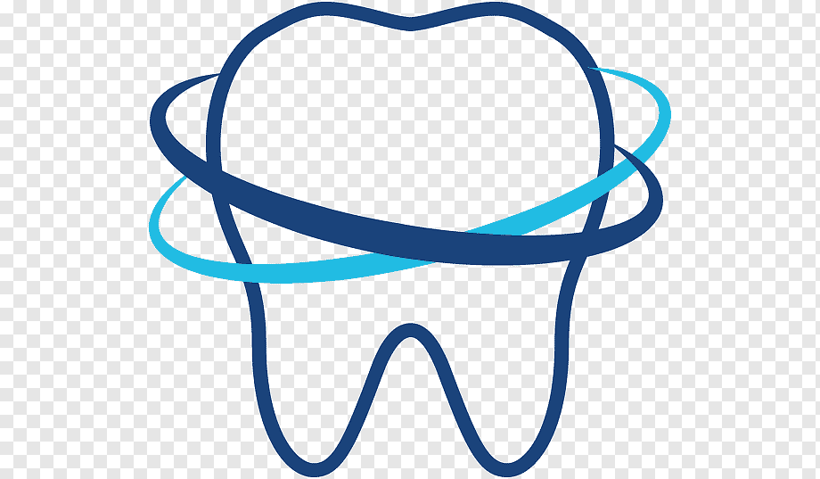

<div class="w-full">
<mat-toolbar color="primary" class="text-white">

  <!---->
  <button mat-button routerLink="/">
    <mat-icon>home</mat-icon> Clínica Dental Especializada
  </button>
  <span class="example-spacer"></span>
  <!-- This fills the remaining space of the current row -->
  <span class="fill-remaining-space"></span>
  <div fxLayout="row" fxShow="false" fxShow.gt-sm>
    <ng-container *ngIf="user$ | async; let user">
      <button mat-raised-button routerLink="/client">Clientes</button>
      <button mat-raised-button routerLink="/product">Productos</button>
      <button mat-raised-button routerLink="/service">Servicios</button>
      <button mat-raised-button routerLink="/user">Usuarios</button>
      <button mat-raised-button routerLink="/logout">Cerrar sesión</button>
    </ng-container>
  </div>
  <button mat-button [mat-menu-trigger-for]="menu" fxHide="false" fxHide.gt-sm>
    <mat-icon>menu</mat-icon>
  </button>
</mat-toolbar>

<mat-menu x-position="before" #menu="matMenu">
  <button mat-menu-item routerLink="/client">Clientes</button>
  <button mat-menu-item routerLink="/product">Productos</button>
  <button mat-menu-item routerLink="/service">Servicios</button>
  <button mat-menu-item routerLink="/">Inventario</button>
  <ng-container *ngIf="user$ | async; let user">
    <button mat-menu-item routerLink="/settings">{{user.userName}}</button>
    <button mat-menu-item routerLink="/logout">Cerrar sesión</button>
  </ng-container>
</mat-menu>

</div>
